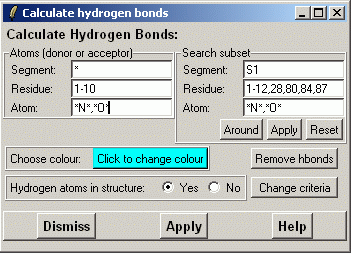

******************************************************************
Calculate and display hydrogen bonds
Leif Laaksonen CSC 2001
Eero Häkkinen CSC 2002
******************************************************************
Calculate and display hydrogen bonds. :
Select the acceptor atom(s) for whitch you want to calculate the hydrogen bonds.There is a preliminary algorithm to calculate the hydrogen bonds even though the hydrogens are missing. To use this you have to click the "Hydrogen atom in structure:" to "No".
You can also set the search subset to decrease to the amount of time taken by
hydrogen bond calculation algorithm. Normally you don't have to set it, but
when playing a trajectory with option "Hbond recalculation" turned on
specifying search subset might be worth-while.
Search subset is a group of atoms which every acceptor and donor must belong to.
The easist way to specify it is to press "Around" button which finds
all nitrogen and oxygen atoms which are closer than 5 Angstroms to atom in atom list.
To accept the search subset press "Apply" button between
"Around" and "Reset" buttons. To use the default search subsest
(that include all atoms) press the "Reset" button.
After selecting the previous options press the "Apply" button.

It is also possible to export the hydrogen bond information through the "show atom hbond AtmNr StrNr" command.
Line command: see calculate command
It is also possible to set the search subset through the "exit hbsubset Seg ResNr AtmNr" command.
Line command: see edit command
/************************************************************************/ /* */ /* The hydrogen bond test used by these functions are the one described */ /* in HBPLUS userguide (http://http://www.csb.yale.edu/userguides/ */ /* datamanip/hbplus/hbplus_descrip.html). */ /* */ /* There are five criteria for all atoms: */ /* -distance between donor and acceptor is less than 3.9 Angstroms */ /* -distance between hydrogen and acceptor is less than 2.5 Angstroms */ /* -angle donor-hydrogen-acceptor is greater than 90 degrees */ /* -angle donor-acceptor-any_atom_bonded_to_acceptor */ /* is greater than 90 degrees */ /* -angle hydrogen-acceptor-any_atom_bonded_to_acceptor */ /* is greater than 90 degrees */ /* */ /* The length criteria are tested by function TestHbondLengthCriteria */ /* and the angle criteria are tested by function TestHbondAngleCriteria.*/ /* */ /* If the acceptor is at an amino-aromatic ring or is a side atom of an */ /* aromatic ring the potential hydrogen bond must pass two tests more */ /* (function IsAtomAtAminoAromaticRing tests if atom is at an amino- */ /* aromatic ring). The extra test are: */ /* -angle between the aromatic plane and the line donor-acceptor must */ /* be smaller than 20 degree. */ /* -angle between the aromatic plane and the line hydrogen-acceptor */ /* must be smaller than 20 degree. */ /* */ /* These function require the atom connection table (returned by */ /* function GetAtmConnection). */ /* */ /* These functions can also be used to find hydrogen bond in a molecule */ /* without hydrogens (the result isn't perfect then). In that case */ /* the distance and angle test which need hydrogens are omitted. */ /* The distance between the donor and the hydrogen is supposed to be */ /* 1.0 Angstroms and therefore the distance between the donor and the */ /* acceptor must be less than 3.5 Angstroms. */ /* If the donor is a nitrogen at an aromatic ring the hydrogen is */ /* supposed to at the same plane as the nitrogen and the two atoms */ /* bonded to the nitrogen and all the angle in that plane are supposed */ /* to be 120 degree. */ /* */ /************************************************************************/
**********************************************************************
LUL/2002
**********************************************************************